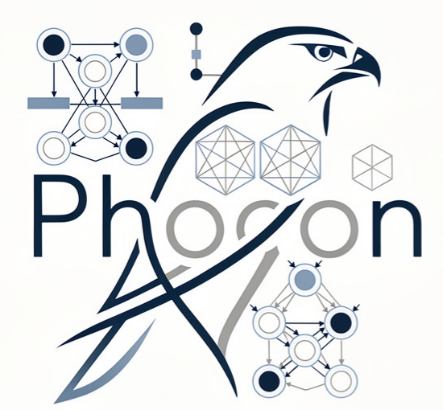

Petri Nets, Higher-Dimensional Automata, Partial Orders, and Concurrency
PHOCON
PHOCON is a workshop at the intersection of Petri nets and concurrency theory. It concerns itself with models for concurrency, partial-order semantics, their relation to Petri nets, and their applications. Topics of interest include, but are not limited to
We are calling for presentations of original, unfinished, already published, or otherwise interesting work within the topics of the PHOCON workshop. The submission can be in the form of a poster, an abstract, a paper submitted to or published at another conference, a tool demo or any other format.
Submission is via EasyChair at https://easychair.org/conferences/?conf=petrinets2026
Original contributions to PHOCON will be published in a volume of the CEUR Workshop Proceedings. Selected best papers will be invited for publication in a volume of the journal Transactions on Petri Nets and Other Models of Concurrency (ToPNoC). (These selected papers are expected to be thoroughly revised and will go through a new round of reviewing.)
PHOCON will take place in Hamburg, associated with PETRI NETS 2026. Please see their web site for instructions.